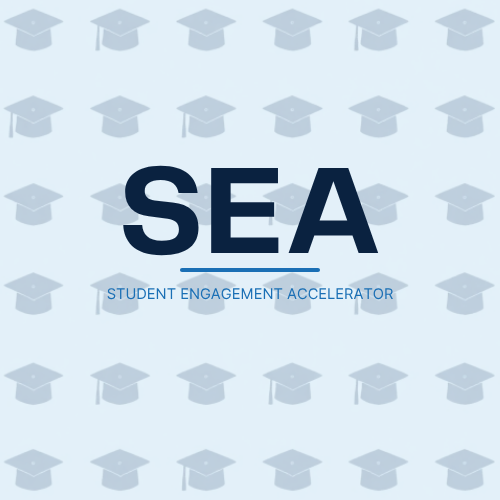
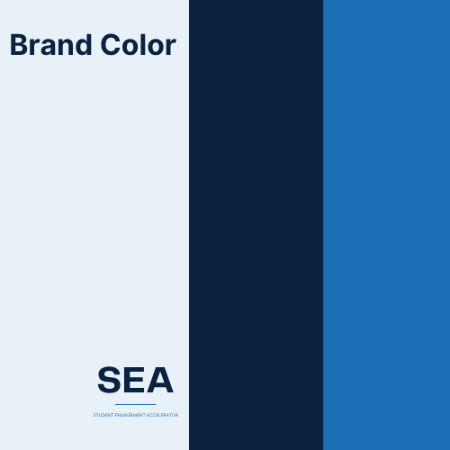

SEA · Social Engagement Accelerator
The dashboard concept used as the throughline project for the entire internship. Every department rotation added a new layer to the same product.
01Description
The Social Engagement Accelerator aggregates student social data from across campus, including clubs, events, dining, and housing, into a single dashboard. It applies an engagement score to each student, group, event, and institution, helping staff identify socially isolated or at-risk students early and enabling real intervention: connecting students to counselors, peer buddies, or campus resources. The dashboard serves three audiences with role-specific views: academic advisors, group and event owners, and institutional leadership.
SEA was designed against two very different institution types: a residential four-year university where engagement is everywhere and needs steering, and a commuter community college where engagement barely exists and needs to be created. That contrast shaped nearly every product decision along the way, from data sourcing to UX (user experience) to the FERPA and HIPAA constraints (U.S. laws protecting student and health records) on what the dashboard can show.
02Brand
A quick logo and color exercise from the Week 4 Marketing rotation, built to give SEA a consistent look across every mock deliverable that followed.


03Reflection
Using one continuous, fictional product as the throughline for every department rotation was the most effective part of the internship’s design. Rather than learning product strategy, engineering, marketing, support, finance, and sales as disconnected lessons, each one got taught in the context of the same real dashboard, so a decision made in Week 1 about data segmentation was still shaping the marketing persona in Week 4 and the demo script in Week 7. It made the connections between departments concrete instead of abstract.
05Skills
- Dashboard UX
- Data Segmentation
- Engagement Scoring
- Cross-Department Product Thinking
- FERPA / HIPAA-Aware Design